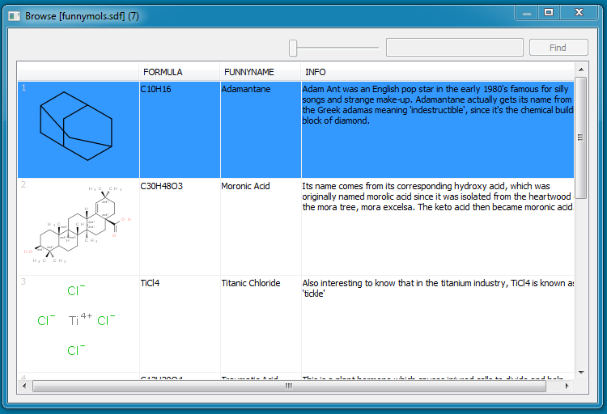
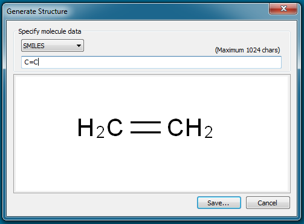
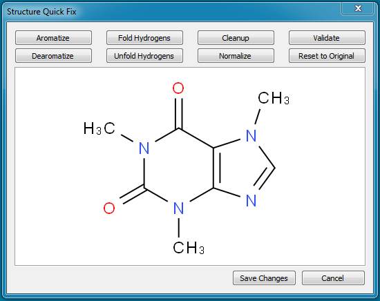

Features
Browse Molecules
Browse feature is available in the ThumbFish context-menu when the user right-click on a multi-molecule file such as SDF in Windows Explorer. It displays a dialog and loads the file in a multi-column list containing molecule in FIRST column and molecule record properties in other columns. The nice thing about the browser is that it loads the molecule in background and allows thousands of molecules to be loaded without blocking the user interface. Note that this feature is only enabled when a single multi-molecule file (SDF, RDF, CML, SMILES) is selected.
Extract Molecules
Extract feature is available in the ThumbFish context-menu when the user right-click on a supported chemical file in Windows Explorer. This feature can be used to extract molecules from a multi-molecule file. The extracted molecules can be converted to different formats on the fly and saved as separate files. For example a number of MOL files can be extracted from a SDF file. Note that this feature is only enabled when a single multi-molecule file (SDF, RDF, CML, SMILES) is selected.

The extract dialog follows the "Statement UI" format which is described on the product blog. Basically, Statement UI describes the operation using statements and parts of it are configurable. The above dialog has five configurable parts. You can click on any of the links and change the options. The configurable links can display a menu, open a dialog or expand the extract dialog to display an area for additional input such as shown in the dialog above.
Generate Molecule
Generate feature is available in the ThumbFish context-menu when the user right-click on an empty area inside a folder. This feature can be used to create a new molecule from SMILES or InChi string. It displays the generated molecule in the display area as the user enters the string. The generated molecule can then be saved to any of the supported formats.
QuickFix
QuickFix feature is available in the ThumbFish context-menu when the user right-click on a supported chemical file in Windows Explorer. This feature can be used to apply different options such as Aromatize/De-aromatize, Fold/Unfold Hydrogens, Cleanup, Normalize and Validate. Applied changes can be saved to the original file.
